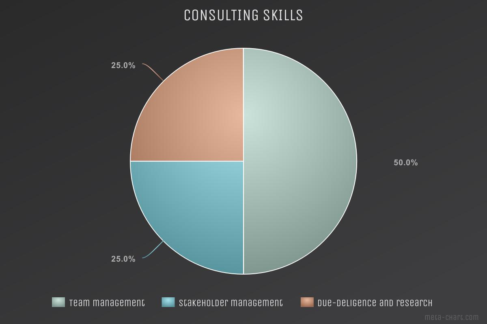

"I have had the pleasure of engaging Darsh on a number of technical consulting projects. The spectrum of skills at Darsh's disposal means that he is an individual I know I can rely upon, regardless of the task, and somebody who can deal with ambiguity in finding the right solution. I have been particularly impressed by Darsh's confidence and competence as a presenter, being at home in front of both technical and commercial audiences; his breadth of experience, from theoretical astrophysics to AI and biotech, from academia to the startup world to consulting; his inquisitive and amicable nature; and his first-principles thinking allowing him to independently navigate complex problem solving tasks."
Consulting
Applied technology consulting across industries, from deep-tech to enterprise AI.
Darsh has delivered high-quality research, analysis, and technical strategy across a range of industries — leading diverse teams under tight deadlines and translating complex technical problems into clear, actionable outcomes.
Focus areas
Applied AI, data science strategy, scientific R&D, deep-tech due diligence, and cross-functional team leadership.
Approach
First-principles problem solving, primary research, and clear communication to both technical and commercial audiences.
Multi-industryEnergy, biotech, climate-tech, logistics, AI
OxfordProgramme lead roles and client delivery
Technical + commercialConfident presenter to both audience types
Capabilities
Skills brought to client work

Client feedback
What collaborators say
"Working with Darsh is a rewarding experience. He grasps new ideas quickly, works well with team colleagues and consistently established productive client relationships. Darsh applied his research and strategy skills flexibly on two diverse projects — one on the business opportunity for AI and blockchain in supply chains, and another on climate-change collaboration. The feedback from our clients was excellent. He has strong leadership qualities and actively looks for ways to help others and give back."